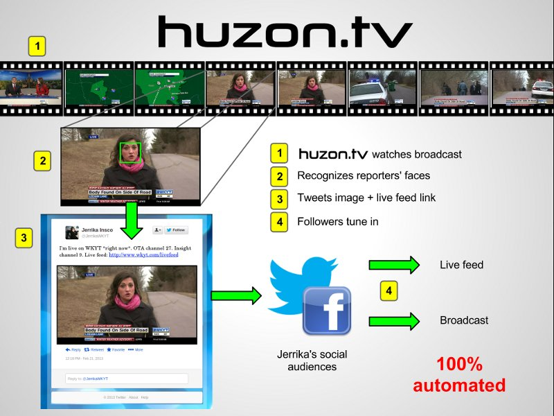

What is huzon.tv?
Automated social marketing for local TV
huzon.tv is a 100% automated social media marketing system for local TV stations. In short, it watches your station's channel and looks for your reporters' faces. When it sees them, huzon.tv Tweets and/or Facebooks the image from their accounts along with a link to the station's live streaming video feed.

What's the goal?
The sustained, consistent social media effort driven by huzon.tv boosts the traffic your station's live Internet stream and broadcast and is effective at engaging a younger audience than traditional marketing efforts.
100% automated? Really?
Yes. Our leadership team has years of experience developing products for local TV stations. We know that there is no manpower to spare on any recurring tasks. Thus, full automation was our primary design criterion.
How does it integrate with my station's existing systems?
It doesn't! huzon.tv only needs to capture your OTA broadcast. Bandwidth usage is ~100 kBps (.1 MBps).
Does huzon.tv record and/or publish video?
No. huzon.tv is not a video platform. It is designed to send viewers to your TV station's existing broadcast, cablecast and live Internet streams.
How customizable is the system?
huzon.tv enables its partner stations to choose which reporters' accounts are connected to the system, how often they trigger alerts and what the alert messages say.
How does it work?
While we can't get into details about our face recognition and automation algorithms, we can show you this short video which simulates how the system looks for a particular face and fires an alert in realtime during a newscast:
Contact
To inquire about services and pricing, please contact sales@huzon.tv.